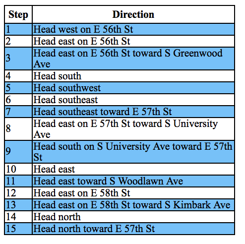
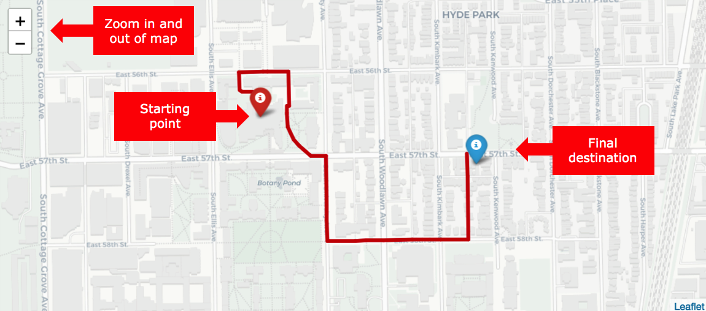
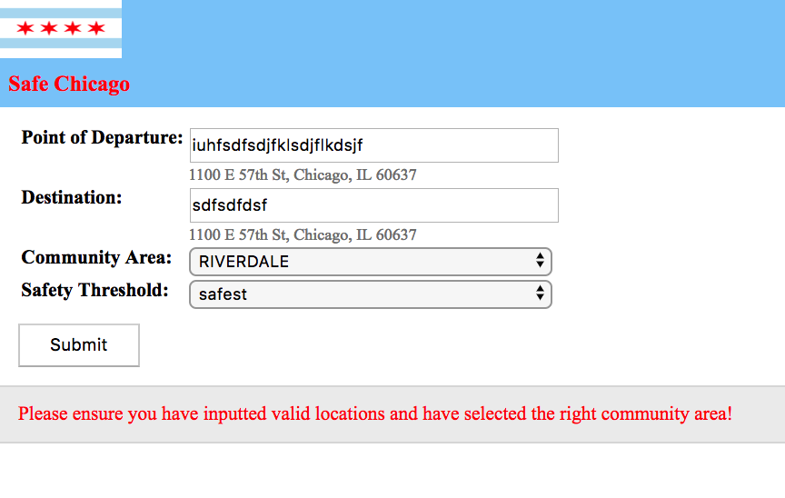
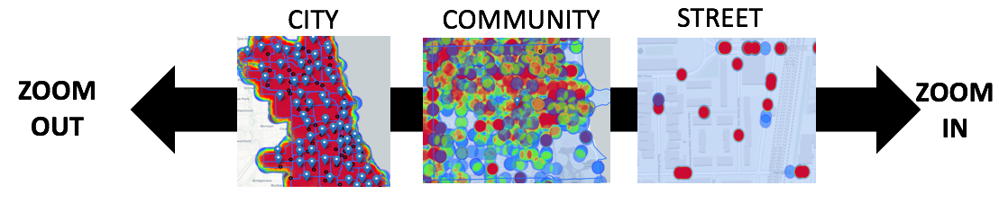
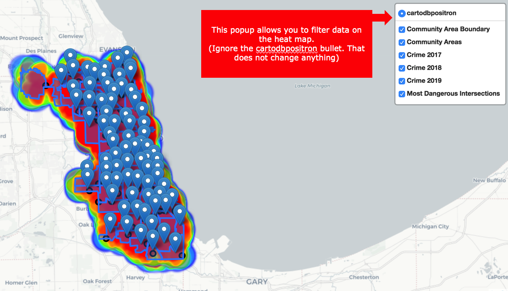
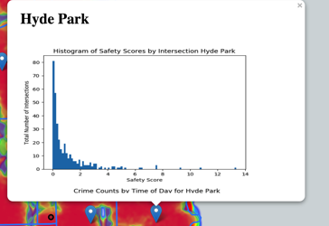
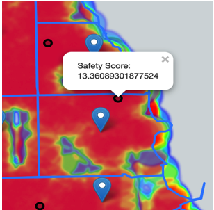
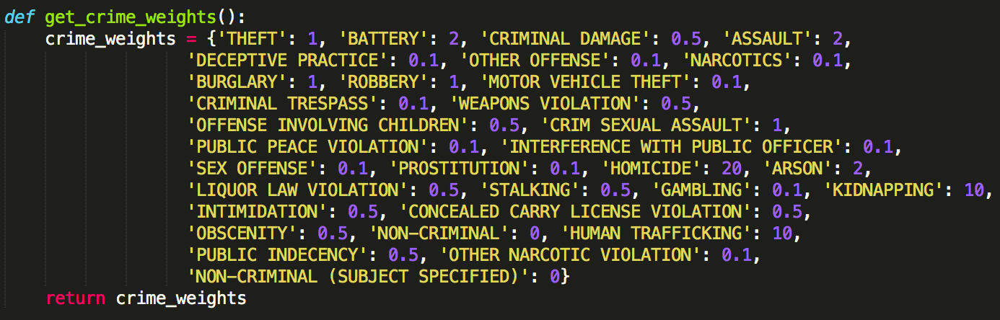

Safe Chicago is a platform that aims to sensitize its users about crime in Chicago. This platform was developed by Kei Irizawa, Adam Oppenheimer, Swayam Sinha and Shyamsunder Sriram for our CS 122 project at the University of Chicago.
Special thanks to Dr. Matthew Wachs for his invaluable guidance throughout our project.
Back to Table of Contents
Point of Departure (textbox): Can input full valid address or building name
Destination (textbox): Same as point of departure
Community area (drop down menu): Select relevant community area. You have to select the right community area of Chicago in order to walk. For instance if you enter Point of departure and Destination addresses meant for Hyde Park, you need to select Hyde Park for the program to work, otherwise it will yield an error message. Refer to Error message in section 1.2 for more information
Safety Score (drop down menu): This applies the safety score algorithm of our program. (Confused about safety scores? Check out Section 3 for a detailed description of our methodology in determining safety scores.) There are three main safety score options:
i. Default: No safety score weighting. Uses standard google maps output.
ii. Safer: Limited safety score weighting. Less priority given to streets with history of more severe crimes that has serious risk of causing harm to a potential passerby.
iii. Safest: High safety score weighting. Less priority given to streets with history of crimes that have moderate risk or above of causing harm to a potential passerby.
Back to Table of ContentsThere will be a list of directions in the left side in a box. In case the page runs out of space for the directions, either scroll down or zoom out.
If the user inputs valid parameters, the there will be a map that will graphically displays the route shown above.
In case of an invalid input, the program will return an error message. Note both the starting location and destination have to be in the same community area (refer to Section 1.3 for more details).
Note sometimes the directions may or may not change based on safety score. Our safety score algorithm gives a score on how safe the street is, and there are three possible safety thresholds given an area. If there is no difference in route between the 'default' and the 'safest' setting for example, this indicates that it is a safer area. However, if there is a difference then note that the default route takes you through areas that have had dangerous crime since 2017.
Back to Table of ContentsThis section is meant for addressing valid inputs that may yield absurd results. That’s on us… not on you.
You can only find destinations within a specific community area. We intended to generalize our program to find the route between any two Chicago addresses. Unfortunately we could not figure out how to deal with the streets on the boundary of two communities in our analysis. Thus we had to make the community area as a parameter of our program. If you have figured this out please let us know! Besides, most people walk within a community anyways so this covers most of the cases. But if you’re still insistent in using our program for covering borderline community areas, the route directs you to or from a point that is at the very edge of the community rather than the entire route
Addresses that require routes that pass through UChicago campus boundaries can yield strange outputs. This is because we used historical crime data from the Chicago data portal. To get the actual route at UChicago (or any Chicago college campus for that matter), we would have needed the streets where university police/security is present and we would have had to hardcode that data in. This program should be used if you are venturing off campus, but remember that on campus you are safe within university campus boundaries even if the program says if it is unsafe.
Back to Table of Contents
Back to Table of Contents
This is what the map looks when you land on the page. The heatmap is organized in a rainbow color fashion, such that more red the heatmap is the more dangerous it is. Yes, the entire Chicago is red, which is not that accurate. You need to zoom in for more accurate information. (Refer to section 2.2 for a picture of the different types of useful heatmaps
If you click the button on the top right hand side, you will get a popup that resembles the picture above
Clicking on the blue icon will generate a popup that includes 4 graphs of statistics that the user can scroll down.
Clicking on the black circle will give the safety score of the most unsafe area in that community. The higher the safety score, the more dangerous the area. There is no scale for these safety scores but you can compare the safety scores of the different community areas.
Notice how the heatmap is made of circles. These circles indicate a crime. The individual circles are clearer in the street level, and they get distorted at the community level creating a heatmap
We used the same crime weights for the safety score and the heat map. Essentially, the crimes that we thought would provide greater risk to the passerby should have a greater weight attached. Note that we did not use any fancy study to come up with these values, but rather our intuition. This is a major assumption that goes behind generating the heatmap and the safety scores for that matter. We have provided the weights for each type of crime that we used below. Note that the higher the number, the more dangerous the crime. We used a python dictionary to represent this information and use it in our safety score calulations (Refer to Section 3 for more information).
Back to Table of Contents
We can think of the Chicago street network as one big graph with nodes and edges. We assigned different crime weights for all the crimes as shown in section 2.2. We then assigned each crime's location to the nearest node. Now each node has a corresponding weight of crimes and probability of crimes happening near that area. This gave us an idea of creating a "safety score" that would give the user an indication of how safe each node is.
Back to Table of ContentsWe concluded that time of day, season and weather (temperature) also affected the proability of crime in addition to crime weights.
We used pyplot to figure out the total number of crimes for each time of day in Chicago since 2017. We concluded that during early morning hours, there is a clear decrease in crimes. It is clear that time of day affects the crimes.
Season also affects the number of crimes. There is an increase in crime in the summer months. Also note that online research suggests that police departments tend to report some December crimes in January so that the can decrease number of crimes that year for incentives. Online research suggests this.
Even though the graphs suggest that there is a drop of crimes in the early morning and increase in crimes in the summer, making that general assumption in our overall safety score formula would not be that accurate because crime still exists in the other months. Also it may not be the case that all types of crimes are more probable in the summer. Furthermore, in some community areas, there are more actually more crimes in the winter! Therefore we wanted to determine the probability of certain crimes happening a little more abstractly. We weighed historical crimes that had the same season and time of day bucket more than others, and crimes with different seasons and times less. Because we are using historical data we are able to extract trends that are more accurate than the general trends that we determined from our simple pyplot graph.

Graph above displays the total number of crimes by temperature in Fahrenheit. Source: http://crime.static-eric.com/
It is true that season is closely correlated with weather, but it does not account for the drop of crimes in extreme temperatures. This is why we included the weather weight. However, the same logic for the "profile weight" for season and time of day can be applied here to improve the accuracy of our algorithm. However, this requires historical data to gain trends, and getting historical data for Chicago weather was cumbsersome. However, this could be a possible extension of our project.
We wanted to give a greater weightage to more recent crime in an area, and since our stored crime dataset is updated with new crime, we want to give the older crimes less importance. Therefore we used a decay function that weighs crimes that were a year ago by half as much, and crimes two years ago by a quarter as much as indicated by our decay function
When using the direction program, different users may be willing to take varying amounts of risks when walking from Point A to Point B, and may prioritize the shortest route here. Since we used Dijkstra's algorithm for determining the shortest route, we wanted to adjust the lengths of the routes between each node according to the safety threshold. We distributed all the crimes based on safety scores and increased the lengths of all streets attached to the node which has a relatively high percentile based on the corresponding safety threshold. Furthermore, users sometimes maybe in a situation where they have to pick between two dangerous streets, and we wanted to give them the option to pick the safer route in this scenario.
Default just calculated the shortest path without modifying the lengths of the streets
Safer increased the street lengths by 10x for nodes between the 75th and 90th percentile, and 20x for nodes above the 90th percentile.
Safest increased the street lengths by 10x for nodes between the 25th and 75th percentile, 20x for nodes between the 75th and 90th percentile, and 40x for nodes above the 90th percentile.
Back to Table of Contents